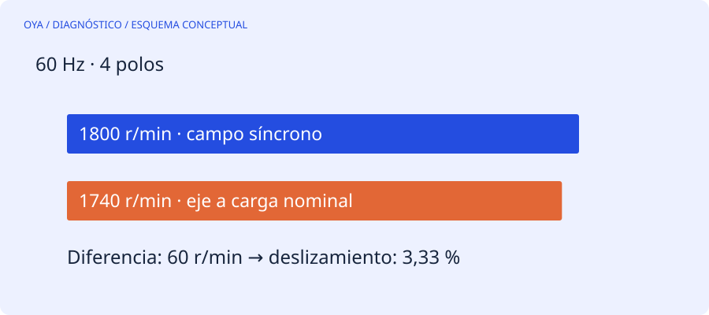

El campo y el eje no giran exactamente igual
En un motor de inducción, el campo magnético gira a la velocidad síncrona, determinada por frecuencia y polos. El rotor necesita una diferencia de velocidad respecto al campo para inducir corriente y producir par. Esa diferencia relativa se llama deslizamiento.
A 60 Hz y cuatro polos, la velocidad síncrona es 120·60/4 = 1800 r/min. Si la placa indica 1740 r/min para su condición nominal, el deslizamiento correspondiente es (1800−1740)/1800 = 0,0333, es decir, 3,33 %. No faltan revoluciones por un defecto inevitable: esa diferencia forma parte del funcionamiento del motor de inducción.
Referencias a ambas frecuencias
| Polos | Síncrona a 50 Hz | Síncrona a 60 Hz |
|---|---|---|
| 2 | 3000 r/min | 3600 r/min |
| 4 | 1500 r/min | 1800 r/min |
| 6 | 1000 r/min | 1200 r/min |
| 8 | 750 r/min | 900 r/min |
La velocidad nominal suele quedar por debajo de la síncrona correspondiente, pero no se debe identificar un motor únicamente por una velocidad medida. Puede estar alimentado por variador, tener otra frecuencia efectiva o pertenecer a una tecnología distinta.
El deslizamiento cambia con la carga
La cifra de placa no promete que el eje gire siempre a esa velocidad. Con poca carga, la velocidad suele acercarse a la síncrona. Al aumentar la exigencia de par dentro de la zona normal de trabajo, aumenta el deslizamiento. Cerca de condiciones anormales o del límite de par, esa relación deja de ser una herramienta lineal sencilla.
Un cálculo realizado con la velocidad de un tacómetro necesita frecuencia real y número de polos. Si un variador está entregando 45 Hz a un motor de cuatro polos, su referencia síncrona es 1350 r/min, no 1500 ni 1800. Usar la frecuencia de la red de entrada del variador daría una interpretación incorrecta.
Qué significa una lectura inesperada
Primero comprueba instrumento, unidades y condiciones de medición. Después contrasta frecuencia de salida, tensión, corriente y carga. Una velocidad baja puede acompañar sobrecarga, caída de tensión o problemas de alimentación; no demuestra por sí sola una avería de rotor. Una lectura por encima de la velocidad síncrona puede indicar otro modo de operación, error en los polos introducidos o una máquina impulsada externamente.
La calculadora no diagnostica el rotor
La herramienta de velocidad devuelve la referencia síncrona y, si introduces una velocidad medida, el deslizamiento aritmético. Acepta cero como velocidad medida: corresponde al rotor parado y arroja 100 %. Ese resultado no autoriza un ensayo de rotor bloqueado. Las pruebas energizadas y las mediciones cerca de elementos giratorios requieren personal competente, resguardos y un procedimiento seguro.
Fuentes y alcance
Referencia de consulta: DOE: motores y sistemas accionados. Los ejemplos numéricos son educativos y no describen un trabajo realizado.